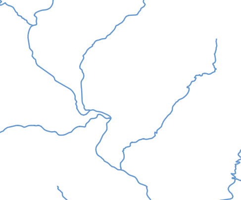
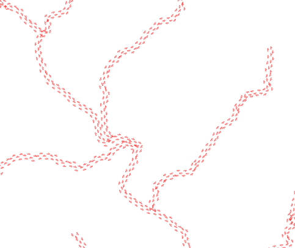
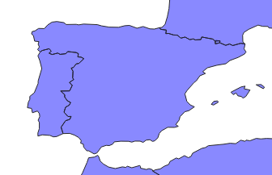
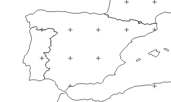
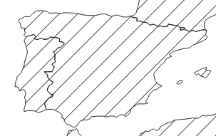

Bridge uses the bridge-style library to export QGIS simbology into other formats such as SLD (used when uploading to GeoServer), MapServer files, or MapboxGL.
Below you can find a list of supported elements that are know to be correctly converted from QGIS to SLD, along with additional information about limitations of the conversion between these two formats.
Size values can be used in milimeters, pixels, points, or real world meters. In this last case, expressions cannot be used, only fixed values.
Notice that it’s, however, a safer option to use pixels instead of milimeters (which are the default unit in QGIS), since pixels is the assumed unit for formats like SLD, and, therefore, no conversion is needed.
Expressions are supported wherever QGIS allows to use data-defined values. They must be created using QGIS expression language (Python custom functions are not supported). Not all functions available in QGIS can be used, since there’s not an equivalent for all of them in GeoServer. The following is a list of the QGIS functions that can be used:
Certain parameters accept expressions, but those are not supported by Bridge when converting to SLD:
Colors
Parameters selected from drop down lists
Offset values
Expressions are not supported for size measurements, when those measures are not expressed in pixels or mm (that is, if you are using map units or real word meters for a size that changes with the current map scale)
ELSE rule is supported, but it might behave incorrectly in the SLD version if the layer has labeling, since QGIS consider labeling to be a separate part of the symbology, while SLD considers it as another symbolizer
To know more about the supported expressiosn that can be used in rules filters, see the Expressions section
The following symbol layer types are supported for rendering lines:
Simple line

Below is a list of the parameters that are supported:
Color
Stroke width
Stroke style
Join style
Cap style
Offset
Marker line:

Below is a list of the parameters that are supported:
Marker placement: only withinterval mode is supported
Offset along line
As marker, you can use simple markers, SVG markers and raster image markers, with the restrictions mentioned in the corresponding section about supported symbology for point symbols.
The following symbol layer types are supported for rendering polygons:
Simple fill

Below is a list of the parameters that are supported:
Size
Fill Color
Fill style: only solid,nobrush,horizontal,vertical,cross
Stroke Color
Stroke style
Stroke width
Join style
Rotation
Point pattern fill

Below is a list of the parameters that are supported:
Horizontal distance
Vertical distance
As marker, you can use simple markers, SVG markers and raster image markers, with the restrictions mentioned in the corresponding section about supported symbology for point symbols.
Line pattern fill

Below is a list of the parameters that are supported:
Rotation: Angle will be rounded to a multiple of 45 degrees
Spacing
Outline: Simple line
See the section on supported symbology for simple lines
Outline: Marker line
See the section on supported symbology for marker lines